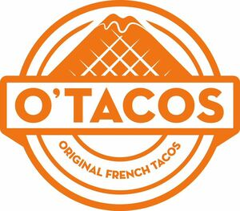

Trade Mark Journal No.2026/010 6 March 2026
WO0000001902260 (9,29,30,35,39,43,45)
Office of origin: France
Date of International Registration:27 November 2025
Date of designation in the UK:
27 November 2025

The mark contains the colour orange
International priority date claimed: 26 November 2025
(France)
(5202828)
- Class 9
- Mechanisms for coin-operated apparatus; cash registers; calculating machines; downloadable e-wallets; data processing equipment; computers; tablet computers; smartphones; electronic book readers; recorded software; business management software; data management software; downloadable game software; virtual reality software; downloadable application software for virtual environments; downloadable software in the form of a mobile application for food delivery and ordering; downloadable software in the form of a mobile application for the delivery and ordering of meals prepared by virtual restaurants; downloadable digital image files authenticated by non-fungible tokens [NFTs]; downloadable digital music files authenticated by non-fungible tokens [NFTs]; computer peripherals; eyeglasses; 3D spectacles; virtual reality headsets; eyewear; spectacle cases; integrated circuit cards [smart cards]; bags adapted for laptops; smart watches.
- Class 29
- Meat; fish, not live; poultry; game; meat extracts for culinary use; charcuterie; salted meats; crustaceans (not live); hamburger steaks; chicken pieces; textured formed vegetable proteins used as meat substitutes; prepared dishes mainly consisting of meat substitutes; tofu-based preparations; fries; French fries; potato chips; fried potatoes; vegetable salads; prepared salads; mixed salads; fish fillets; foods prepared from fish; canned meat; canned fish; canned vegetables; canned fruits; deep-frozen meat; deep-frozen fish; deep-frozen vegetables; cooked vegetables; processed vegetables; prepared vegetable-based dishes; deep-frozen fruit; pickles; cheeses; milk and dairy products; milk beverages with milk predominating; milk shakes; kefir [milk beverages]; whipped cream; fried onion rings; fruit salads; jellies for food other than confectionery; jams; fruit compotes; eggs; omelets; gherkins; processed onions; edible oils and fats; butter; cooked dishes based on vegetables, meat, fish; marinated jalapeno peppers; breaded and fried jalapeños.
- Class 30
- Coffee; tea; cocoa; sugar; rice; tapioca; sago; coffee substitutes; cocoa-based beverages; coffee-based beverages; instant cocoa; tea-based beverages; honey; syrups and molasses; hamburger sandwiches, namely patties inserted into a bread roll, namely hamburgers; burgers inserted in brioche bread, namely hamburgers; fish sandwiches; sandwiches containing chicken; breakfast sandwiches; hot sandwiches; burritos; sandwiches; bread; toasted bread; bread-making products; cereal-based preparations; tortillas; filled tortillas; wraps, namely, rolled sandwiches; filled buns and sandwiches; sauces for use as condiments; food condiments mainly consisting of ketchup and salsa sauce; salad dressings; food sauces; spicy sauces; curry sauces; meat gravies; Barbecue sauces; sauces for barbecued meats; horseradish sauce; ketchup [sauce]; spreads made with mayonnaise and ketchup; mayonnaise-based sauces; dairy-based sauces; cheese sauces; sauces for meat; sauces for chicken; sauces for fruits; vegetable sauces; spices; mustard; tomato ketchup; mayonnaise; salt; pepper; vinegars; salad dressings; oatmeal; buns; cinnamon buns; donuts; fritters and donuts (pastry); pastry; chocolate; cakes; fruit cakes; edible ices; ice for refreshment; desserts in the form of ice or ice cream.
- Class 35
- Advertising; commercial business management; commercial administration; clerical services (office functions); dissemination of advertising material (leaflets, prospectuses, printed matter, samples); newspaper subscription services (for third parties); arranging subscriptions to telecommunication services for third parties; advisory and information services regarding business organization and management; accounting; photocopying services; employment agency services; business management for freelance service providers; computerized file management services; traffic optimization for Internet sites; search engine optimization for sales promotion purposes; commercial information via websites; presentation of goods on all communication media, for retail purposes; retail services for foodstuffs, beverages and prepared dishes; online ordering services in the field of takeaway and delivery by restaurants; on-line ordering services in the field of restaurant take-out and delivery; administrative processing of purchase orders; customer loyalty and loyalty card services; online retail services for clothing; online retail services for downloadable virtual clothing; retail services for downloadable digital image files authenticated by non-fungible tokens [NFTs]; providing an online marketplace for buyers and sellers of downloadable digital image files authenticated by non-fungible tokens [NFTs]; provision of an online marketplace for buyers and sellers of downloadable digital image files authenticated by non-fungible tokens [NFTs]; provision of online marketplaces for buyers and sellers of goods and services; services of brokers and commercial intermediaries for the provision of products, services, food, beverages [commercial intermediation]; organization of business meetings; sales promotion services; marketing services; marketing of goods; consumer marketing research; market studies; organization of exhibitions for commercial or advertising purposes; online advertising on a computer network; rental of advertising time on all communication media; publication of advertising texts; rental of advertising space; dissemination of advertisements; advice regarding communication (advertising); public relations; advice regarding communication (public relations); company audits (commercial analyses); commercial intermediation services; commercial business administration of franchises; help and advice for business organization and management in the context of franchise networks; assistance regarding commercial franchise management; commercial assistance to companies with respect to franchises; commercial assistance services for franchise operation; commercial advice in the field of franchising; assistance in product commercialization within the framework of franchise contracts; consulting services relating to franchise advertising; administrative services relating to the commercial business of franchises; advice concerning management of establishments as franchises; providing assistance in the field of franchised company management; services provided by a franchiser, namely commercial assistance in the operation or management of industrial or commercial companies.
- Class 39
- Transport; provision of information with respect to transport; logistics services with respect to transport; freight forwarding services; packaging and storage of merchandise; transport and delivery of goods; delivery of food by restaurants; delivery of ready-to-eat food and beverages; fast-food delivery services for food products, beverages, cooked dishes; meal home delivery services; collection and delivery of packages and goods.
- Class 43
- Services for providing food and beverages; catering services; coffee shops; brasseries; café services; bar services; coffee shops; cafeteria services; canteen services; food and beverage preparation services; self-service restaurant services; services provided by restaurants selling take-away meals; fast-food services; drive-in restaurants, namely, restaurants where customers are served in their vehicles and leave with meals prepared for take-away; snack bars; preparation of cooked dishes, foodstuffs or meals for consumption on or off the premises; provision of food and take-away food available online via a computer network; temporary accommodation.
- Class 45
- Licensing of intellectual property rights; licensing industrial property rights; managing and exploiting industrial property rights and copyrights through licensing; trademark licensing; issuing licences for franchise concepts; online social networking services.
O TACOS CORPORATION
Representative: VERNERET Catherine DS AVOCATS, 69 boulevard Haussmann, F-75008 PARIS, FRANCE